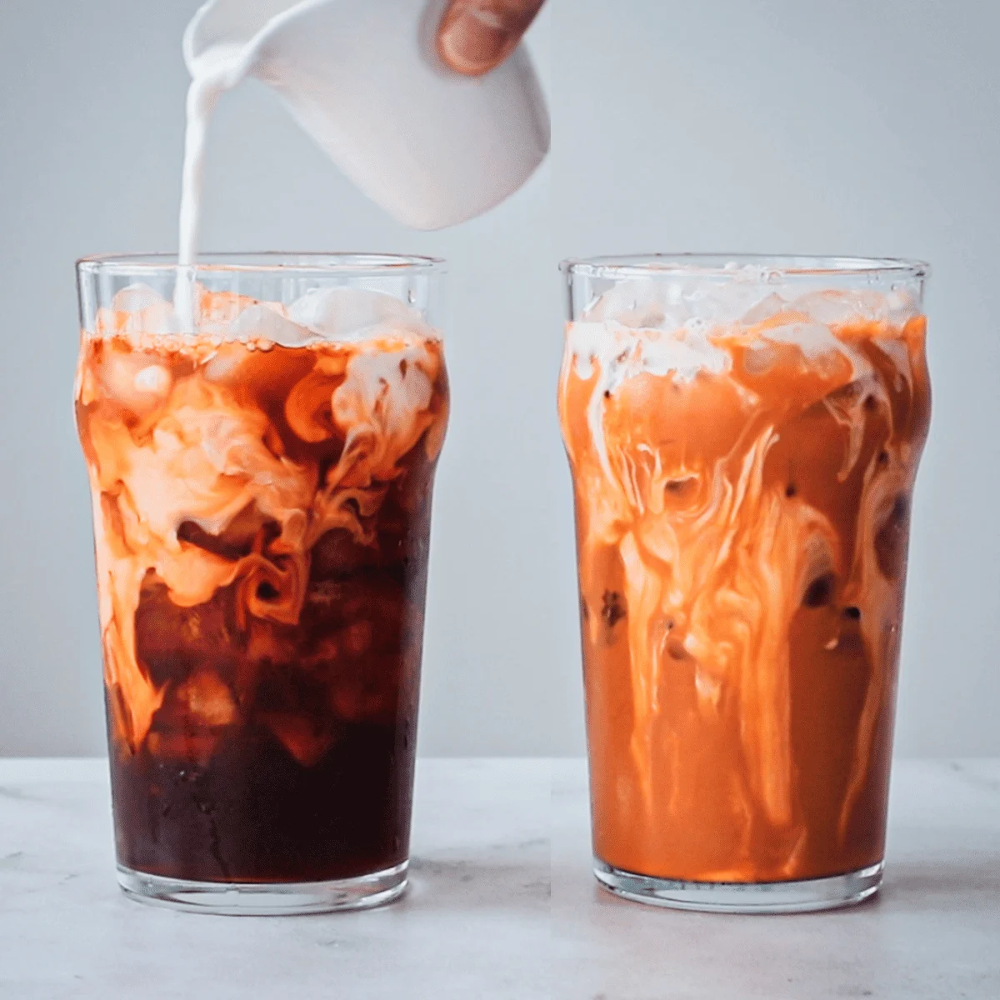

Home
Thai Iced Tea

Description
Two easy ways to make the iconic Thai drink at home. You can make it Thai style to try it the way it's done in Thailand, or make the American style to replicate the tea from your local Thai restaurant.
Prep time - 5 mins
Cook time - 10 mins
Ingredients
Thai tea base
- 3/4 cup thai tea leaves
- 4 cups boiling water
- 1/4 cup sugar
- 1/8 tsp salt
Thai style
- 3/4 cup thai tea base from above
- 1 1/2 Tbsp sweetened condensed milk
- A pint glass with ice
- 2-3 Tbsp evaporated milk
American style
- 3/4 cup thai tea base from above
- 1 Tbsp sugar
- A pint glass with ice
- 3-4 Tbsp half and half
Steps
For the tea base
- Steep the tea leaves in hot off-the-boil water for 5 minutes and then strain through a fine mesh strainer. If you have a french press, steep it in the french press and make the straining process easier!
- Add the sugar and salt and stir to dissolve. Allow to cool to room temp before making tea so it won't dissolve the ice too much. You can now store this base in the fridge it will last at least a couple of weeks.
For the thai style thai tea
- Pour the Thai tea base into a mixing glass and stir in the condensed milk until dissolved. If the tea base is chilled, it will help to microwave it briefly and bring it to room temp so the condensed milk will dissolve more easily.
- Pack a serving glass full of ice and then pour in the tea. Drizzle with the evaporated milk on top and enjoy!
For the american style thai tea
- Pour the Thai tea base into a mixing glass and stir in more sugar to your taste, if needed. If the tea base is chilled, it will help to microwave it briefly and bring it to room temp so the sugar will dissolve more easily.
- Pack a serving glass full of ice and then pour in the tea. Drizzle with the half and half on top and enjoy!
Original recipe at hot-thai-kitchen.com